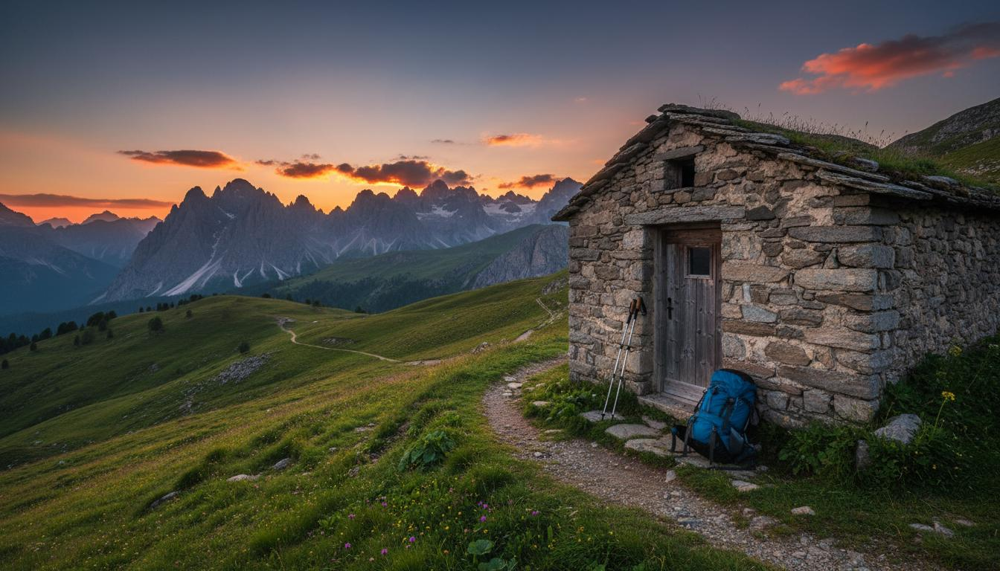

Il Cammino
Il viaggio dell’eroe, in natura.
Quattro giorni zaino in spalla. Ogni tappa è una fase del cammino: la chiamata, la sfida, la visione, il ritorno con il dono.
Tanti weekend, ma nessun viaggio vero?
Weekend, gite, escursioni. Tutto bello, tutto effimero: torni carico e martedì mattina è già svanito.
Il Cammino non è un weekend. Sono quattro giorni in cui ogni tappa ha un senso: chiamata, sfida, visione, ritorno.
Quattro giorni, quattro fasi, un solo cammino.
Giorno 1 — La Chiamata. Incontro, cerchio di apertura, prime domande. Perché sei qui? Cosa cerchi?
Giorno 2 — La Sfida. La tappa più lunga. Affronti le tue resistenze. Cammini da solo per un tratto, in silenzio.
Giorno 3 — La Visione. Raggiungi il punto più alto. Il cerchio serale condivide ciò che è emerso.
Giorno 4 — Il Ritorno. Si torna, ma non si è più gli stessi. Un dono che porti con te.
Ogni giorno è una soglia.
La Chiamata
Il primo giorno è ascolto. Perché sei qui? Cosa ti ha spinto a partire?
La Sfida
La tappa più impegnativa. Cammini, la stanchezza arriva, i pensieri emergono.
La Visione
Il punto più alto, letteralmente e non. Dopo la fatica, la chiarezza.
Il Ritorno
Torni con qualcosa di concreto: un dono, una consapevolezza, una decisione.

Non stai correndo da qualche parte.
Sei dove sei, con tutta l’attenzione che hai.
Potrebbe essere per te se…
- vuoi fare qualcosa di profondo, non un altro weekend;
- il cammino dell’eroe ti affascina ma non sai da dove iniziare;
- hai bisogno di tempo lungo, non di scatti veloci;
- cerchi un gruppo che cammini con intenzione;
- vuoi tornare diverso da come sei partito.
Non è…
Non è un trek
Non conta la difficoltà tecnica né l’altitudine. Il cammino è metafora, non prestazione.
Non è terapia di gruppo
Non ti chiedo di condividere traumi. Le cose emergono da sé, se vogliono.
Non è una promessa
Non prometto trasformazioni. Prometto un cammino onesto e condiviso.
I prossimi cammini.
Gruppi piccoli, che camminano con intenzione.
Date indicative, da confermare. Scrivimi per conoscere il percorso esatto e la disponibilità.
Cosa è rimasto, dopo.
Quattro giorni dopo i quali i miei weekend non sono stati più gli stessi.
— Giulia, 35, Torino
Il cerchio serale attorno al fuoco è stato il momento più potente.
— Alberto, 48, Bologna
Tornare dopo quattro giorni e sentire che qualcosa è cambiato. Questo è il valore.
— Luca, 42, Firenze

Pronto per il tuo cammino?
Scrivimi e raccontami cosa cerchi. Ti spiego come funziona e capiamo insieme se questo cammino fa per te.